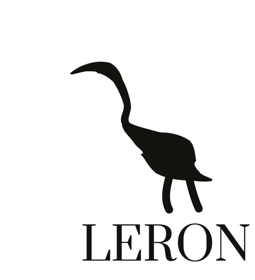

Coffee is not a product.
It's culture.
Estate microlots. Garzón, Huila.
High-scoring coffee, grown with intent.


Huila no es origen.
Es estándar.
En las montañas del Huila, el café no es industria apresurada. Es práctica lenta, consciente y obsesiva. Cada microlote es una decisión.

En las altas mesetas del Huila, el café no se cosecha.
Se
selecciona. Cada
cereza, en su momento exacto de madurez.
Black Heron · Garza Negra
Proceso Washed. Tueste Medium Dark. Notas de Chocolate Oscuro, Caramelo & Almendra Tostada.
Quiénes somos
La historia
detrás del grano
Desde las montañas del Huila hasta tu taza.
Un proceso de selección sin
concesiones.
Ahora que nos conoces
Conoce The Black Heron →
Identidad de marcaUn solo gesto.
El símbolo reduce la garza a un único gesto: la curva de su cuello, desde el nacimiento del ala hasta la punta del pico. Se elimina el cuerpo, las alas y las patas — lo que queda es la postura, no la ilustración. Menos elementos, mejor proporción.
Specialty CoffeeOrigen
Garzón, Huila es una región donde el café se cultiva con altitud, tiempo y criterio. Cada microlote responde a decisiones humanas, no industriales.
Análisis Sensorial — N° 60
The Black Heron
Garza Negra
Washed · Medium Dark · Garzón, Huila